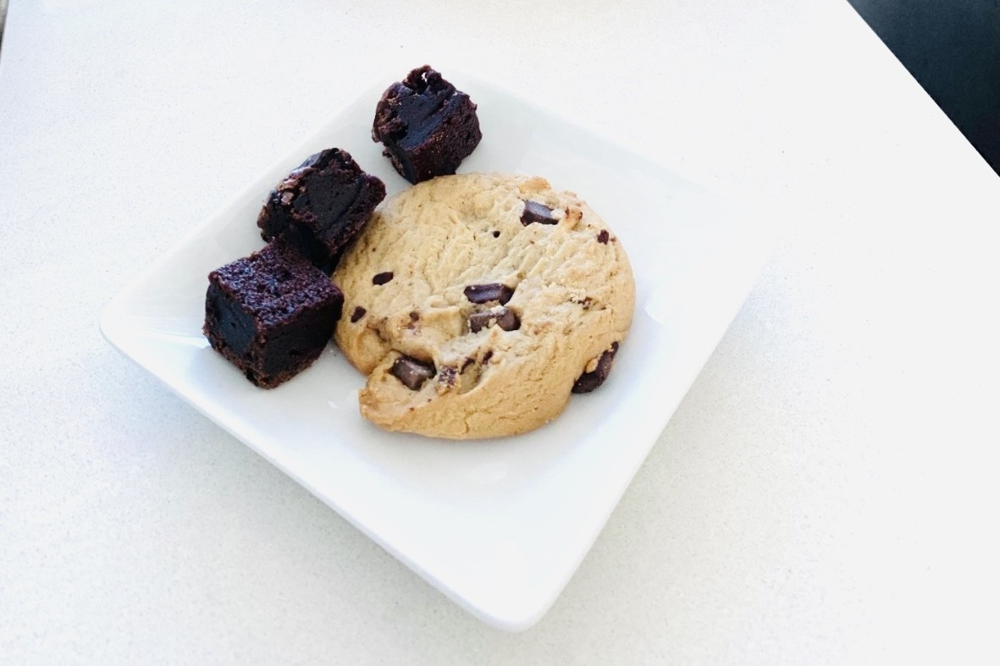

Who Made These Cookies? (How To Ask Without Being Weird)

Sunday afternoon. The holiday party is winding down. Wrapping paper is on the floor, the kitchen smells like cinnamon, and a plate of cookies is going around.
Somebody holds one out to your kid. "Don't worry, there are no nuts in it."
So you ask, "Oh, who made it?"
And nobody knows.
Hmm.
You get nervous. Just a little.
That small pause tells you a lot.
It has happened to us too. At our house one Christmas, it was a chocolate instead of a cookie. My son's cousin, who is 5, offered it to him.
My son has a peanut and tree nut allergy. I caught it in time.
I took the chocolate. I told my son not to accept anything other people give him, because he does not know if it has his allergy in it. Then I gave the chocolate back to his cousin.
Nobody did anything wrong. A little kid wanted to share. That is what kids do.
And I know what you are thinking. It was just a chocolate. It was just a cookie.
Yes. That is exactly why it is so easy to miss.
For your kid
If you do not know what is in the food, say no thank you.
One sentence. A child cannot check a label. A child can say no thank you.
For the grown ups: start with one question
"Who made it?" is not rude. It sounds like normal curiosity, and the answer decides what you ask next.
Store bought: Ask to see the package. Read the label yourself.
Homemade: Ask the person who made it what went in. "Do you remember the recipe? I'd love to know what's in it."
From a bakery: If you cannot check it right there, skip it.
Not sure, or something feels off? Skip it. Your gut counts.
Instead of "Is this okay for allergies?", ask "Who made it, and what's in it?" One is a feeling. The other is facts.
Three things to listen for
A clear answer. A person who knows will tell you quickly.
A "let me check." Good. Wait for them to come back.
"I think so" or "probably." That is not an answer. Skip it.
That is also how I build my list. I ask the business directly, and I only list what they confirm.
Same plate. Same cookie. This time you have your question ready. Who made it? Then you listen. A real answer, or a polite no thank you. Both are a good ending.
Some answers are easier to get before you leave the house. The places on my list shared what their kitchen does with nuts. Start there, then do your own checking.